ESP32 WITH USB-C
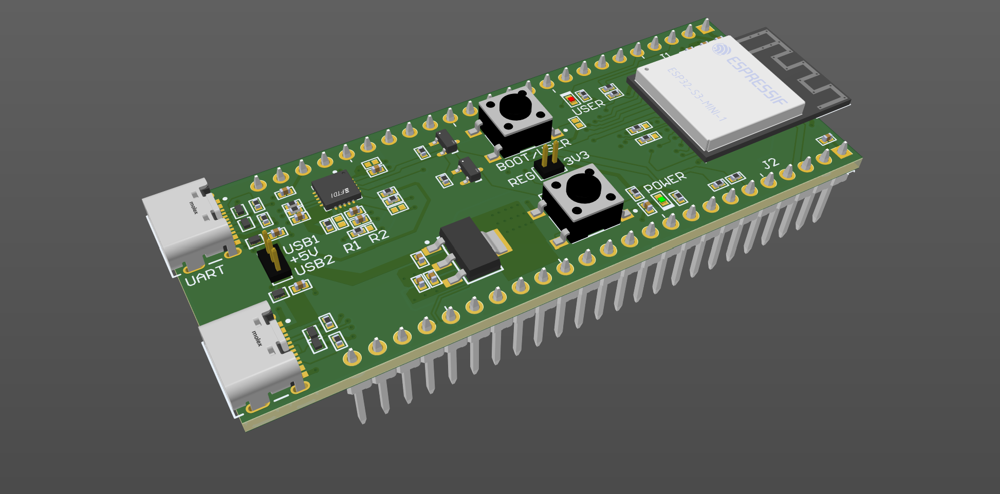Introduction
This project was my first journey into professional PCB design, where I created a custom ESP32 board using Altium Designer. I approached it as both a learning challenge and a way to gain real-world PCB design skills.
Since I had no formal training in Altium, I taught myself the tool by working through documentation, online tutorials, and a lot of trial and error. Early on, I faced challenges with setting up libraries, managing footprints, and configuring design rules. For example, I initially struggled with power trace widths, polygon pours, and resolving design rule check (DRC) errors. Over time, I learned how to properly manage schematic libraries, assign footprints, and use Altium’s rule system to catch errors before moving into layout.
I started by building the schematic, wiring the ESP32 microcontroller with USB-C power input, a voltage regulator, and connectors for expansion. After finishing the schematic, I moved on to creating footprints for the components. Some parts didn’t have ready-made models, so I built the footprints myself and attached 3D step models to certain components to visualize the final assembly more clearly. This gave me confidence that everything would line up correctly on the PCB.
For the PCB layout, I designed the board as a four-layer stack-up, with dedicated power and ground planes. This made routing easier, reduced noise, and helped keep the design compact. I experimented with different component placements to shorten traces and improve signal flow. I also used polygon pours, via stitching, and Altium’s 3D view to refine both the electrical and mechanical aspects of the design.
By the end of the project, I had produced a complete set of outputs for manufacturing: Gerber files, a bill of materials (BOM), schematic and PCB documentation, and a 3D model of the board. More importantly, I came away with a practical understanding of the entire PCB design cycle, from starting with an empty schematic to producing files that could be sent to fabrication.
Schematic
Top View
Top view of the PCB design
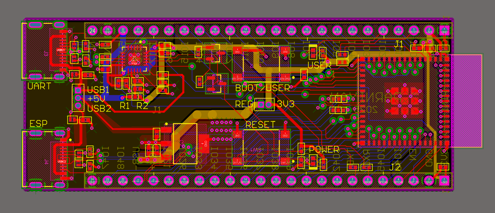 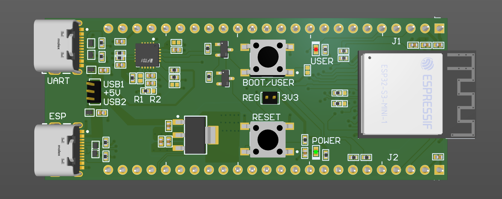Bottom View
Bottom view of the PCB design
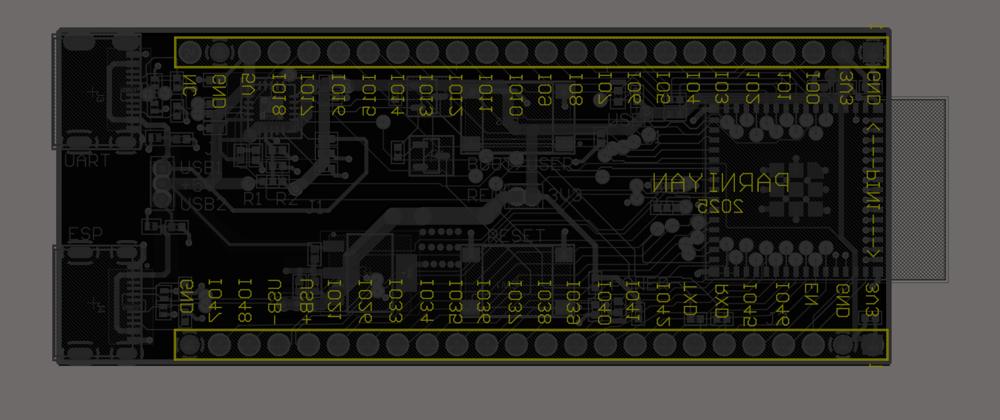 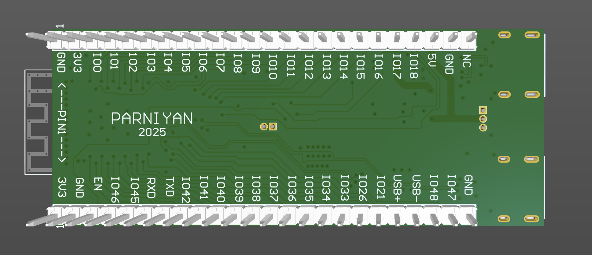Layers
Individual PCB layers for the ESP32 design
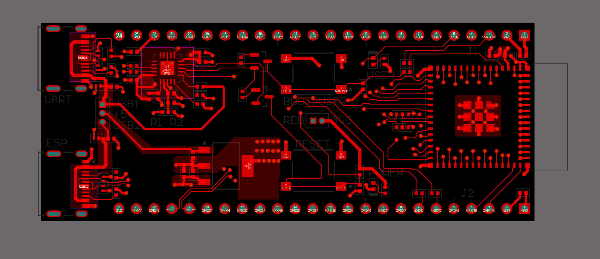 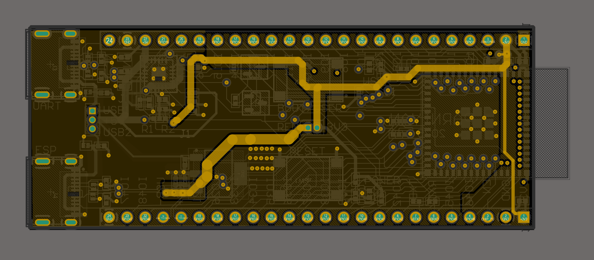 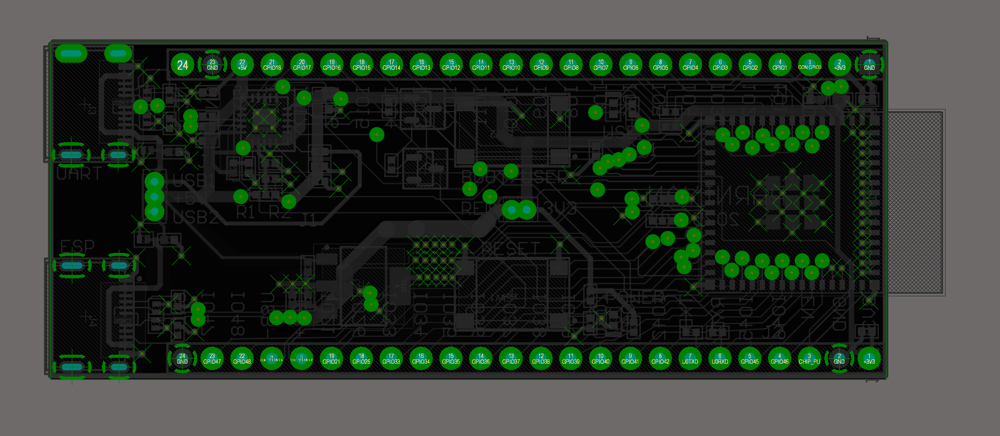 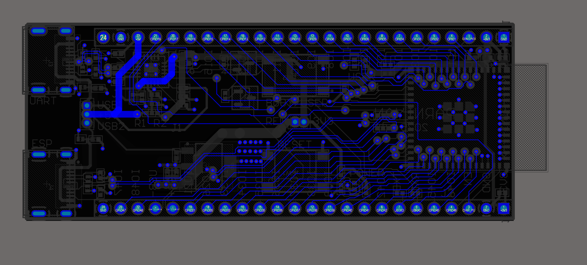3D Views
3D views of the ESP32 custom board
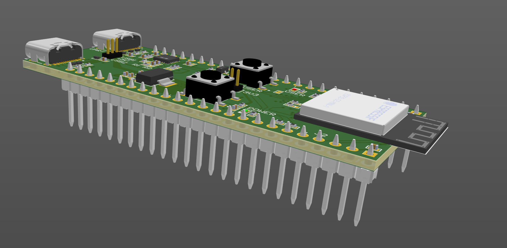 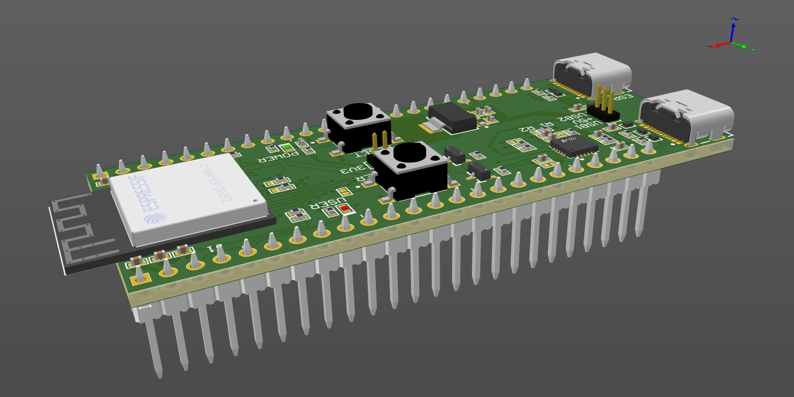